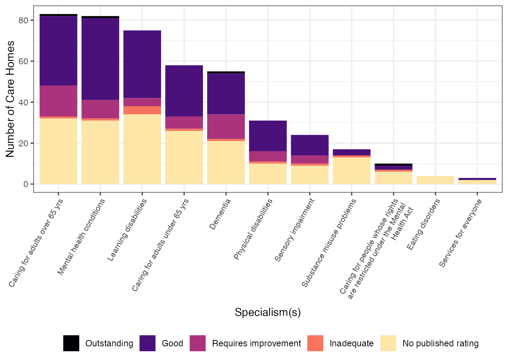

library(cqcr)
library(purrr)
library(dplyr)
#>
#> Attaching package: 'dplyr'
#> The following objects are masked from 'package:stats':
#>
#> filter, lag
#> The following objects are masked from 'package:base':
#>
#> intersect, setdiff, setequal, union
library(ggplot2)
library(forcats)
library(tidyr)The Care Quality Comission does not require registration or the use
of keys to access the API, but they do want users to attach a partner
code to their requests. If you haven’t been provided a code by the CQC,
you should use a name or acronym that identifies you or your
organisation. You can set the code for each session with
cqc_partner_code(), or store it in an environmental
variable named CQC_PARTNER_CODE.
cqcr
Let’s look at the care home options available in a few local authorities in East London. The code below retrieves the ID, name and post code of all care homes in Waltham Forest, Hackney and Tower Hamlets local authorities.
loc1 <- cqc_locations_search(care_home = TRUE,
local_authority = c("Waltham Forest",
"Hackney", "Tower Hamlets"))Given the list of care home IDs, we can retrieve more detailed
information on each of these locations using
cqc_location_details(). We can use some functions from purrr
and dplyr
to create a data frame with some basic information.
care_home_details <- cqc_location_details(loc1)
care_home_df <- map_dfr(care_home_details, `[`,
c("location_id", "name", "number_of_beds",
"onspd_longitude", "onspd_latitude"))
care_home_df <- care_home_df %>%
mutate(rating = care_home_details %>%
map(c("current_ratings", "overall", "rating")) %>%
as.character(),
rating = recode(rating, "NULL" = "No published rating"),
rating = factor(rating, levels = c("Outstanding", "Good",
"Requires improvement",
"Inadequate",
"No published rating")),
report_date = care_home_details %>%
map(c("current_ratings", "reportDate")) %>%
as.character(),
report_date = ifelse(report_date == "NULL", NA, report_date),
specialisms = care_home_details %>% map(c("specialisms", "name")))
care_home_df#> # A tibble: 193 × 8
#> location_id name number_of_beds onspd_longitude onspd_latitude rating
#> <chr> <chr> <int> <dbl> <dbl> <fct>
#> 1 1-105426344 Checania… 3 -0.0499 51.6 No publ…
#> 2 1-105836127 Forest V… 24 0.00178 51.6 Good
#> 3 1-105885228 Heathlan… 84 0.00269 51.6 Good
#> 4 1-106916349 Aspray H… 64 -0.0169 51.6 Require…
#> 5 1-107269593 Acorn Lo… 98 -0.0533 51.6 Require…
#> 6 1-108969091 St Micha… 11 0.00205 51.6 No publ…
#> 7 1-109015718 Ashcroft… 15 0.0120 51.6 No publ…
#> 8 1-109949478 Rosemead… 20 -0.0141 51.6 No publ…
#> 9 1-110213739 Albany N… 61 -0.0187 51.6 Good
#> 10 1-1105339094 Toby Lod… 10 -0.0401 51.5 Good
#> # … with 183 more rows, and 2 more variables: report_date <chr>,
#> # specialisms <list>Lets take a look at the various specialisms that care homes report. Care homes can report multiple specialisms, so the numbers below add up to more than the number of care homes. I have also used the ratings data to show the number of care homes providing a given specialism with their overall rating.
care_home_df_unnest <- tidyr::unnest(care_home_df, cols = c(specialisms)) %>%
mutate(specialisms = fct_infreq(specialisms))
theme_set(theme_bw())
p_specialisms_rating <- ggplot(care_home_df_unnest,
aes(x = specialisms, fill = rating)) +
geom_bar() +
scale_x_discrete(labels = scales::wrap_format(33)) +
scale_fill_viridis_d(name="", option = "A", end = 0.95) +
labs(x = "Specialism(s)", y = "Number of Care Homes") +
theme(legend.position = "bottom",
axis.text.x = element_text(size = 8, angle = 60, hjust = 1))
p_specialisms_rating
Then, we can map our data with the leaflet
package. In this case the colours indicate the most recent inspection
rating, and the size corresponds to a scaled count of beds.
library(leaflet)
pal <- colorFactor(c("blue", "green", "orange", "red", "gray27"),
domain = care_home_df$rating)
labels <- paste0(
"<strong>Name:</strong> ", care_home_df$name,"</br>",
"<strong>Number of Beds:</strong> ", care_home_df$number_of_beds, "</br>",
"<strong>Overall Rating:</strong> ", care_home_df$rating, "</br>",
"<strong>Report Date:</strong> ", format(as.Date(care_home_df$report_date),
"%e %B %Y"), "</br>",
"<strong>Specialism(s):</strong><ul><li>",
lapply(care_home_df$specialisms, paste, collapse='</li><li>'), "</li></ul>"
) %>% lapply(htmltools::HTML)
map <- leaflet(care_home_df) %>%
addTiles() %>%
addCircleMarkers(lng = ~onspd_longitude,
lat = ~onspd_latitude,
label = labels,
color = ~pal(rating),
radius = ~scales::rescale(care_home_df$number_of_beds, to = c(5, 15)))
map